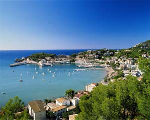

Географическое положение
Географическое положение Испании выделяет её среди других европейских стран набором уникальных особенностей. Она одна вобрала в себя преимущества и прелести целого ряда стран и является объединяющим центром трёх континентов Европы, Африки и Америки.
Испания расположена на юго-западе Европы и занимает примерно 85% территории Пиренейского полуострова, ей принадлежат Балеарские и Питиузские острова в Средиземном море, Канарские в Атлантическом океане.
Общая площадь страны - 504.788 кв.км. Сухопутные границы Испании пролегают с Францией, Португалией, Андоррой и английской колонией Гибралтар. Под управлением Испании находятся Сеута и Мелилья (на территории Марокко) и острова Велес де ла Гомера, Алусенас и Чафаранас.
Территория страны на востоке и юге омывается Средиземным морем, на западе - водами Атлантического океана. Испания находится на пересечении важнейших трансатлантических и средиземноморских водных и воздушных путей, связывающих Европу с американским и африканским континентами.
Самая южная точка Пиренейского полуострова находится всего в 14 километрах от Африки.
Большая часть страны покрыта плоскогорьями и горными хребтами, вокруг которых располагаются живописные равнины и низменности. Леса занимают только 10% территории Испании. Испания – самая горная страна Европы!
Особенности географического положения и исторического развития Испании способствовали тому, что в наши дни это государство является одной из европейских жемчужин.